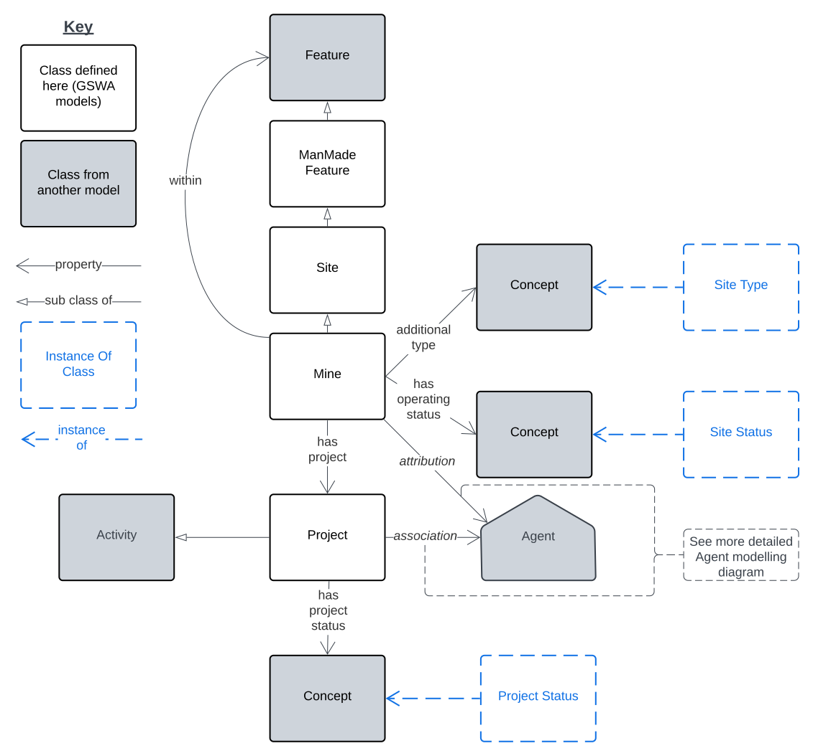
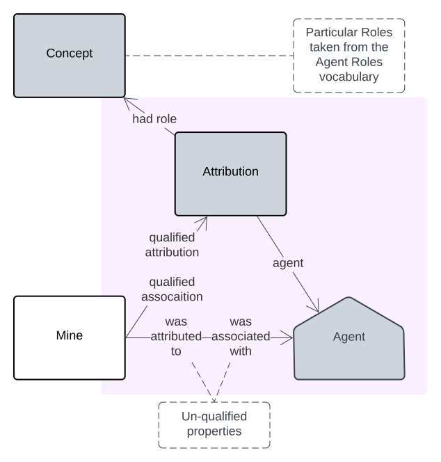
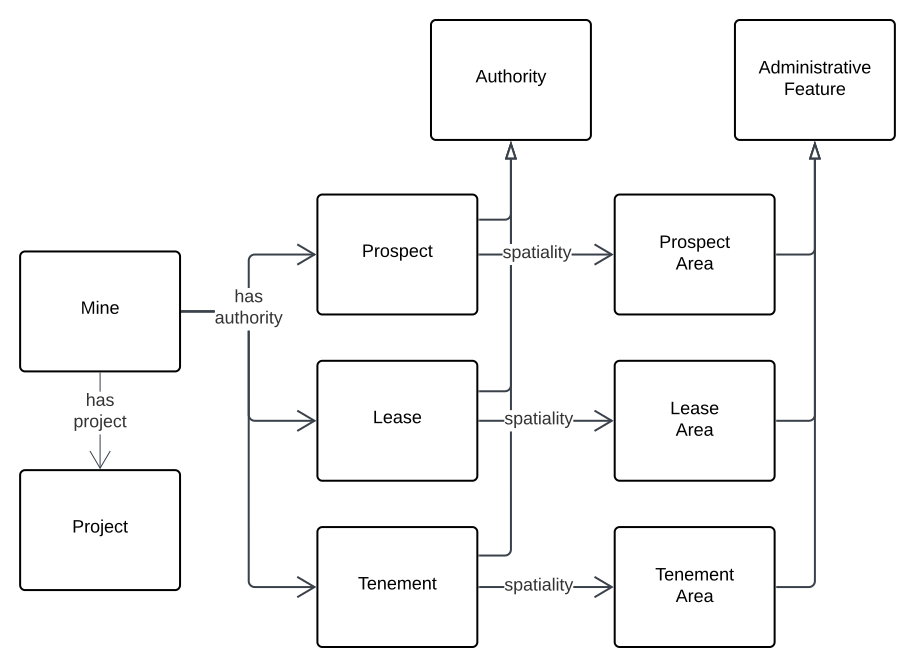
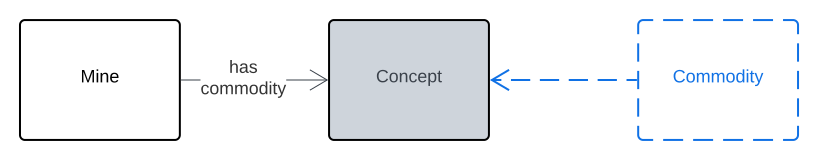
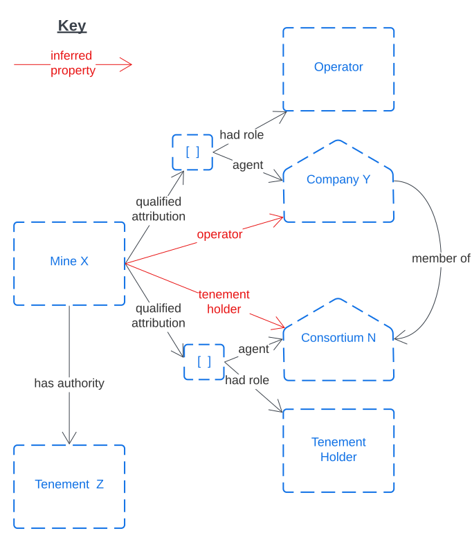

Mines
Overview
{kind=link}

This Mines Model is a model of the physical and administrative characteristics of mines. It considers a mine to be both a geospatial object (a special type of man-made Feature) with spatial properties and relations and also a conceptual object with properties for operation such, as agents with roles like "Operator", the project that manages the mine and legislative or regulatory instrument relations, to things such as Permits.
Modelling Principles
Site & Mine Typing
A Site Types vocabulary defines the various specialised types of Site, such as Mine, Infrastructure, Processing Plant etc. and, within that, there is a hierarchy of types narrower than Mine. Object of the class Mine in this model may onl be further typed with narrower concepts of Mine.
Agent Relations
{kind=link}

Agents relations - of Mines and Mine Projects to People and Organisations - follows the standards PROV standard qualified relations pattern so Agents with relations to Mines and Projects can be indicated with Roles. See Example 1 in Example Scnearios below.
Authorities
{kind=link}

Authorities are licenses, permits etc. that give permission or exclusivity to own/operate Mines in designated areas.
Authority modelling itself is not directly handled in this model (see the Authorities Component Model for that) however common authorities associated with Mines and Projects are shown here.
Commodities
{kind=link}

Commodities are properties of interest within Mines and other Man-made as well as Natural Features. Commodities are not directly modelled here, only the association between a Mine and a Commodity. Commodities need to be listed within a vocabulary.
Example Scenarios
Example 1: A Mine with an Operator and Authority
The following example uses both the un-qualified and qualified relations for a fictitious Mine & Tenement. The pattern will also work for Lease and other forns of Authority.
{kind=link}

Example Data
Here is example RDF data for the union of the examples above:
PREFIX ex: <http://example.com/>
PREFIX gswa: <https://linked.data.gov.au/def/gswa-supermodel/>
PREFIX prov: <http://www.w3.org/ns/prov#>
PREFIX sdo: <https://schema.org/>
ex:mine-x
a gswa:Mine ;
prov:qualifiedAttribution
[
prov:agent ex:company-y ;
prov:hadRole ex:Operator
] ,
[
prov:agent ex:consortium-n ;
prov:hadRole ex:TenementHolder
] ;
gswa:hasAuthority ex:tenement-z ;
sdo:name "Mine X" ;
.
ex:company-y
a sdo:Organization ;
sdo:memberOf ex:consortium-n ;
sdo:name "Company Y" ;
.
ex:tenement-z
a gswa:Tenement ;
.
ex:consortium-n
a sdo:Organization ;
sdo:name "Consortium N" ;
.
Vocabularies
Vocabularies supporting this model and the positions within the model they occupy are listed and described below.
| Vocabulary | Description | Model Position |
|---|---|---|
| Agent Roles Not developed yet |
The roles that Agents play with respect to Sites, Authorities & one another | Range value for prov:hadRole predicate used prov:Attribution instance |
| Site Types Not developed yet |
Fine-grained types of Site | Range value for sdo:additionalType predicate used on Mine (Site) instances |
| Site Operational Statuses Not developed yet |
The status of a Site's operations | Range value for hasOperatingStatus predicate used on Mine (Site) instances |
| Project Status Not developed yet |
The status of a Project | Range value for hasProjectStatus predicate used on Project instances |
| Commodities Not developed yet, could derive from CGI's Commodity Codes vocabulary |
Types of Commodity | Range value for hasCommodity predicate used on Mine (Site) instances |